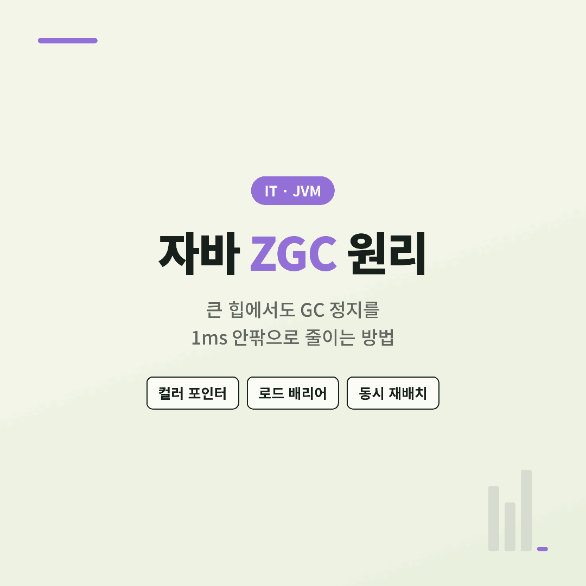
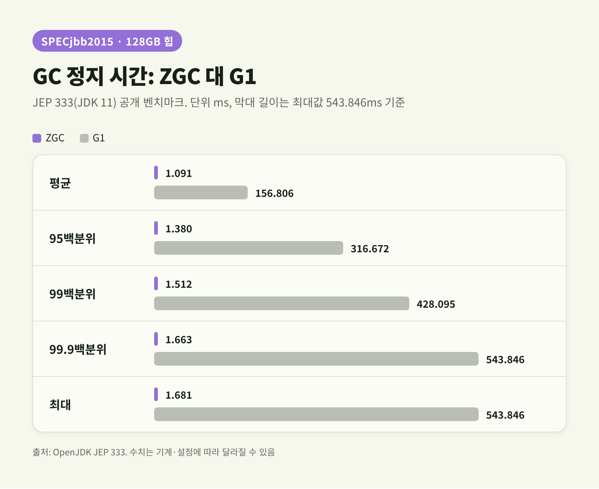
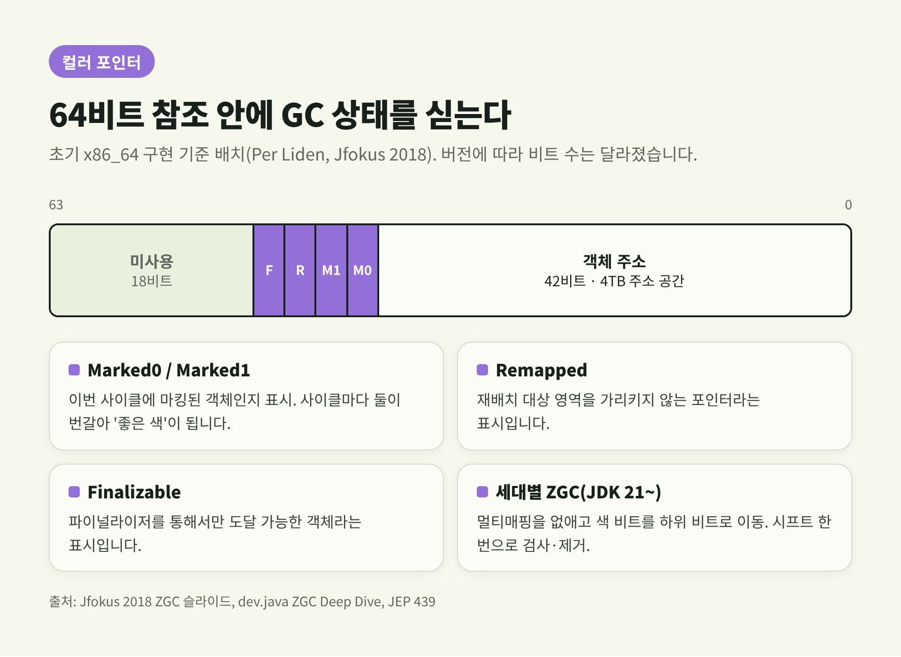
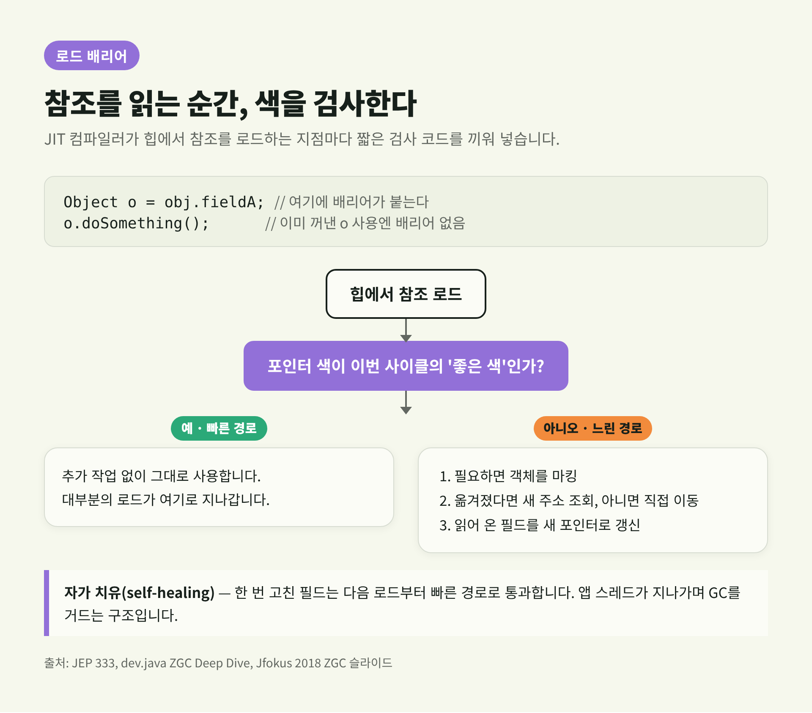
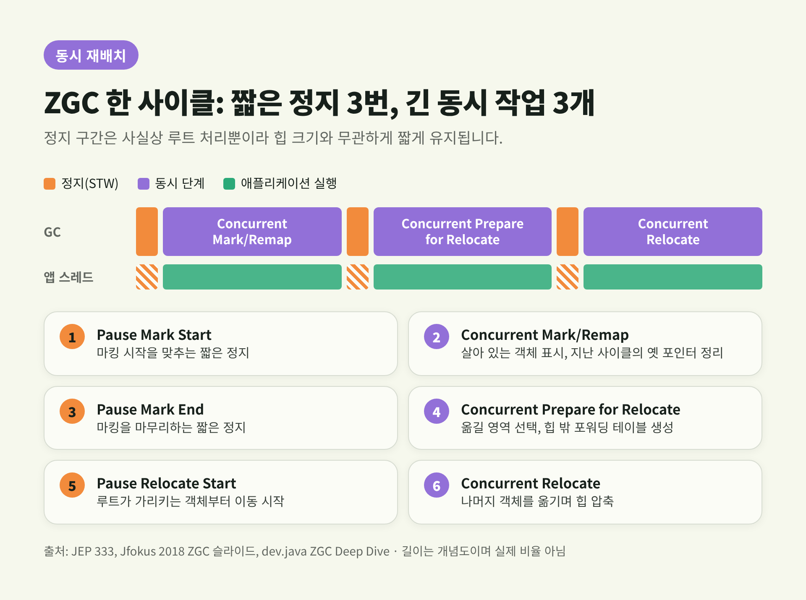
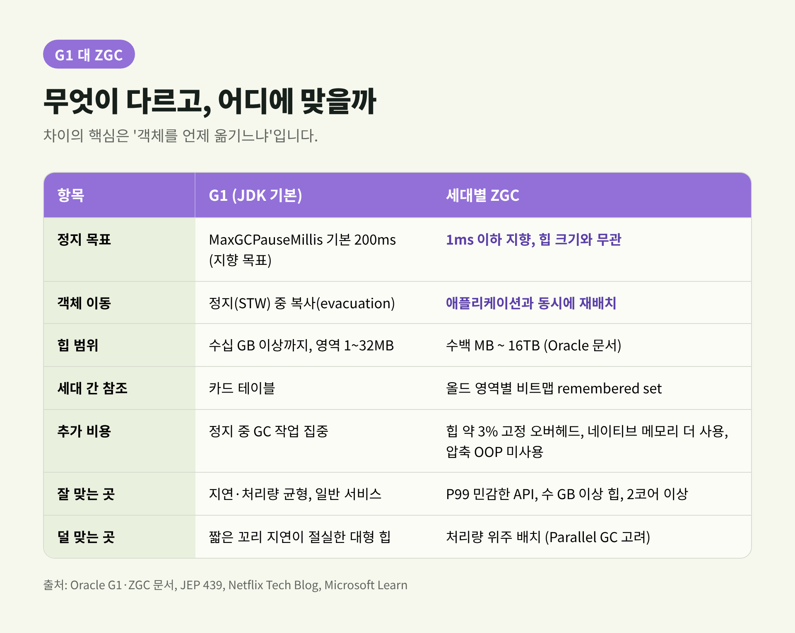
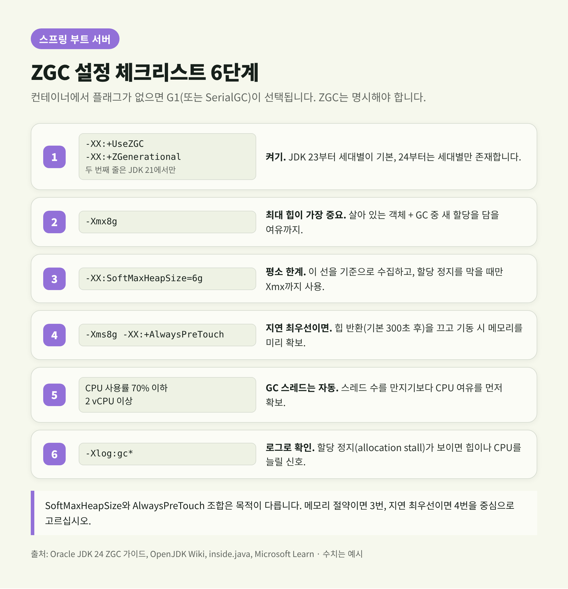

자바 ZGC 원리 — 큰 힙에서도 GC 정지를 1ms 안팎으로 줄이는 방법

이번 글에서는 자바의 저지연 가비지 컬렉터인 ZGC가 어떻게 동작하는지 정리해 보겠습니다. 컬러 포인터, 로드 배리어, 동시 재배치라는 세 가지 장치를 차례로 살펴보고, JDK 21의 세대별 ZGC와 G1의 차이, 스프링 부트 서버에서 언제 어떻게 켜면 좋은지까지 이어서 다룹니다.
먼저 결론부터 말씀드리겠습니다.
- ZGC는 객체를 옮기는 일까지 애플리케이션과 동시에 처리합니다. 그래서 정지 시간이 힙 크기와 거의 무관합니다.
- JDK 21부터는 세대별 ZGC가 들어왔고, JDK 23에서 기본 모드가 되었으며, JDK 24부터는 세대별 모드만 남았습니다.
- 스프링 부트 API 서버라면
-XX:+UseZGC와-Xmx하나로 시작하고, 필요할 때SoftMaxHeapSize를 더하는 정도면 충분한 경우가 많습니다.
■ GC 정지가 왜 문제였을까
자바 서버의 응답 시간 그래프를 보면, 평소엔 고르다가 가끔 뾰족하게 튀는 구간이 있습니다. 그 원인 중 상당수가 GC의 STW(Stop-The-World) 정지입니다. 정지 동안에는 모든 요청 스레드가 멈춥니다.
기본 수집기인 G1도 정지를 줄이려 노력합니다.
G1의 기본 정지 목표(MaxGCPauseMillis)는 200ms입니다. 다만 이것은 지키려고 애쓰는 목표일 뿐 보장은 아닙니다.
더 근본적인 이유도 있습니다. G1은 살아 있는 객체를 다른 영역으로 복사하는 작업을 정지 상태에서 수행합니다.
살아 있는 객체가 많고 힙이 클수록 복사할 양도 늘어납니다.
ZGC가 JDK 11에 실험 기능(JEP 333)으로 처음 들어올 때 내건 목표는 분명했습니다. 정지 10ms 이하, 수백 MB부터 수 TB까지의 힙, 그리고 G1 대비 처리량 감소 15% 이하입니다.
당시 JEP에 실린 SPECjbb2015(128GB 힙) 결과는 이 목표를 넉넉히 넘어섰습니다.

평균 정지는 ZGC 1.091ms, G1 156.806ms였습니다. 99.9백분위에서도 ZGC는 1.663ms, G1은 543.846ms였습니다. 처리량 지표인 max-jOPS도 G1이 ZGC의 91.2% 수준이었습니다. 물론 JEP 스스로 "기계와 설정에 따라 수치는 조금씩 달라진다"고 적어 두었습니다. 방향을 보는 자료로 읽으시면 좋겠습니다.
이후 ZGC는 JDK 15에서 정식 기능(JEP 377)이 되었습니다. 최대 힙은 4TB에서 16TB로, 최소 힙은 8MB로 넓어졌습니다. JDK 16에서는 스레드 스택 처리까지 정지 밖으로 빼냈습니다(JEP 376). 이때 목표가 "ZGC 세이프포인트 안에서 1ms 미만"이었습니다. 지금의 Oracle 공식 가이드도 ZGC가 비싼 작업을 모두 동시에 처리하며 애플리케이션 스레드를 1ms 넘게 멈추지 않는다고 설명합니다.
■ 첫 번째 장치, 컬러 포인터
ZGC의 출발점은 포인터 자체에 정보를 싣는다는 발상입니다.
자바 객체 참조는 64비트 주소입니다. 하지만 실제 주소를 표현하는 데 64비트를 다 쓰지는 않습니다. ZGC는 남는 비트 일부에 이 포인터의 상태를 적어 둡니다. 이것을 "색(color)"이라 부릅니다.

ZGC 개발자 Per Liden의 Jfokus 2018 발표 자료를 보면, 초기 x86_64 구현은 하위 42비트(4TB 주소 공간)를 객체 주소로 썼습니다. 그 위에 네 개의 색 비트가 붙습니다.
- Marked0 / Marked1: 이번 사이클에 마킹된 객체를 가리키는지 표시합니다. 사이클마다 둘이 번갈아 "좋은 색"이 됩니다.
- Remapped: 이 포인터가 재배치 대상 영역을 가리키지 않는다는 표시입니다.
- Finalizable: 파이널라이저를 통해서만 도달 가능한 객체라는 표시입니다.
비트 수 설명은 자료마다 조금 다릅니다. dev.java의 JDK 19 기준 설명은 64비트 중 20비트를 메타데이터로 예약하고 그중 4비트를 쓴다고 적고 있습니다. 최대 힙이 16TB로 늘어나는 등 구현이 바뀌어 온 결과로 이해하시면 됩니다.
이렇게 하면 무엇이 좋을까요. 객체가 어디로 옮겨졌는지, 마킹이 끝났는지를 객체 본문을 열어 보지 않고 포인터만 보고 판단할 수 있습니다. JEP 333은 이 덕분에 포인터를 다 고치기 전에도 옛 영역의 메모리를 회수해 다시 쓸 수 있다고 설명합니다.
대가도 있습니다. 포인터의 비트를 쓰기 때문에 압축 OOP(compressed oops)를 쓸 수 없습니다.
또 비세대 ZGC는 같은 물리 메모리를 세 개의 가상 주소에 겹쳐 매핑했습니다. 그래서 ps 같은 도구에 힙 사용량이 실제의 약 세 배로 보이곤 했습니다.
세대별 ZGC는 이 멀티매핑을 없애고, 색 비트를 포인터의 하위 비트로 옮겼습니다. x64에서는 시프트 한 번으로 색을 확인하고 떼어 낼 수 있습니다.
■ 두 번째 장치, 로드 배리어
색을 칠했다면 누군가 그 색을 읽어야 합니다. 그 역할을 하는 것이 로드 배리어입니다.
로드 배리어는 자바 스레드가 힙에서 참조를 읽어 올 때마다 실행되는 아주 짧은 코드입니다.
JIT 컴파일러가 Object o = obj.fieldA; 같은 문장 바로 뒤에 끼워 넣습니다.
이미 꺼내 온 o를 메서드 호출에 쓰거나 비교할 때는 배리어가 붙지 않습니다.

동작은 두 갈래입니다.
- 빠른 경로: 포인터 색이 이번 사이클의 "좋은 색"이면 그대로 통과합니다. 대부분의 로드가 여기에 해당합니다.
- 느린 경로: 색이 맞지 않으면 객체를 마킹하거나, 새 위치를 찾아 주거나, 아직 안 옮겨졌다면 직접 옮깁니다. 그리고 읽어 온 필드 자체를 새 포인터로 고쳐 둡니다.
마지막 단계가 핵심입니다. 한 번 고쳐 둔 필드는 다음부터 빠른 경로로 지나갑니다. 이를 흔히 자가 치유(self-healing)라고 부릅니다. GC 스레드가 혼자 모든 포인터를 고치는 대신, 애플리케이션 스레드가 지나가며 조금씩 거드는 구조입니다.
비용은 공짜가 아닙니다. 2018년 발표 자료는 SPECjbb2015 기준 배리어 실행 오버헤드를 약 4%로 소개했습니다. 세대별 ZGC는 여기에 스토어 배리어를 더했습니다. 대신 로드 배리어는 색을 떼고 옮겨진 포인터를 고치는 일만 맡도록 가벼워졌습니다.
■ 세 번째 장치, 동시 재배치
이제 두 장치가 합쳐지면 무엇이 가능한지 보겠습니다. 바로 객체를 옮기는 일을 애플리케이션이 돌아가는 동안 해내는 것입니다.

ZGC 한 사이클은 짧은 정지 세 번과 동시 단계 세 개로 이루어집니다.
- Pause Mark Start — 마킹 시작을 알리는 짧은 정지입니다.
- Concurrent Mark/Remap — 객체 그래프를 따라가며 살아 있는 객체를 표시합니다. 지난 사이클에 남은 옛 포인터도 이때 함께 고칩니다.
- Pause Mark End — 마킹을 마무리하는 짧은 정지입니다.
- Concurrent Prepare for Relocate — 옮길 영역(재배치 집합)을 고르고 포워딩 테이블을 만듭니다.
- Pause Relocate Start — 루트가 직접 가리키는 객체부터 옮기기 시작합니다.
- Concurrent Relocate — 나머지 객체를 옮기며 힙을 압축합니다.
정지 구간에서 하는 일은 사실상 루트 스캔 정도입니다. 그래서 JEP 333은 정지 시간이 힙 크기나 살아 있는 객체 수에 비례하지 않는다고 설명합니다.
포워딩 테이블이 힙 밖에 있다는 점도 눈여겨볼 만합니다. 옛 객체 자리에 새 주소를 적어 두지 않으므로, 옮기기가 끝난 영역은 곧바로 재사용할 수 있습니다.
힙은 ZPage라는 영역으로 나뉩니다. 작은 페이지는 2MB로 256KB 이하 객체를 담고, 중간 페이지는 -Xmx가 1GB 이상이면 32MB입니다. 큰 객체는 2MB 배수 크기의 전용 페이지를 받습니다.
JDK 16부터는 빈 영역이 없을 때 제자리 재배치도 합니다. 다만 성능에 불리할 수 있어서, 힙을 넉넉히 주면 피할 수 있다고 안내됩니다.
■ JDK 21 세대별 ZGC가 바꾼 것
초기 ZGC는 세대 구분이 없었습니다. 매 사이클마다 힙 전체를 훑었습니다. 반면 대부분의 자바 객체는 금방 죽습니다. JEP 439는 이를 "젊은 객체는 일찍 죽고, 오래된 객체는 계속 남는다"는 약한 세대 가설로 요약합니다.
예전에는 오래 살 객체까지 매번 다시 확인했습니다. 지금은 젊은 영역을 자주, 오래된 영역을 드물게 수집합니다.
세대별 ZGC의 목표는 할당 정지 위험, 힙 오버헤드, GC CPU 사용을 함께 줄이는 것입니다. 정지는 여전히 1ms 이하를 지향합니다. 세대 크기나 GC 스레드 수, 승격 기준을 사용자가 정할 필요도 없도록 설계했습니다.
구현에서는 G1과 다른 선택을 했습니다. 오래된 영역마다 비트맵 한 쌍으로 세대 간 참조를 정확한 필드 위치까지 기록합니다. 이 방식은 G1의 카드 테이블처럼 카드를 표시할 때마다 메모리 펜스를 둘 필요가 없습니다.
수치도 인상적입니다.
- JEP 439의 Apache Cassandra 벤치마크: 비세대 ZGC보다 4분의 1 힙으로 4배 처리량, 정지는 1ms 미만.
- inside.java 설명글: 처리량은 JDK 17 비세대 대비 약 10% 향상, P99 최대 정지는 10~20% 개선. 평균 지연은 2~3마이크로초 정도 소폭 늘었습니다.
- 같은 글의 Cassandra 실험: 동시 클라이언트 75개를 넘기자 비세대 ZGC는 할당 정지가 났고, 세대별 ZGC는 275개까지 정지 시간이 일정했습니다.
켜는 방법은 JDK 버전마다 다릅니다.
| JDK | 세대별 ZGC 켜는 법 |
|---|---|
| 21 | -XX:+UseZGC -XX:+ZGenerational (빼면 비세대 모드) |
| 23 | -XX:+UseZGC만으로 세대별 (JEP 474) |
| 24 이상 | 세대별 모드만 존재, ZGenerational 옵션 제거 (JEP 490) |
JDK 21 LTS를 쓰시는데 -XX:+UseZGC만 넣으셨다면, 여전히 비세대 모드로 돌고 있을 가능성이 높습니다. 한 번 확인해 보실 만합니다.
■ G1과 ZGC, 무엇을 기준으로 고를까

둘의 차이는 결국 객체를 옮기는 시점에 있습니다. G1은 정지 상태에서 복사하고, ZGC는 애플리케이션과 동시에 옮깁니다.
동시 처리에는 대가가 따릅니다. GC 스레드가 애플리케이션과 CPU를 나눠 씁니다. Netflix는 ZGC가 힙의 약 3%를 고정 오버헤드로 쓰고, G1보다 네이티브 메모리를 더 필요로 한다고 정리했습니다.
그럼에도 Netflix는 JDK 21 이상에서 기본 GC를 G1에서 세대별 ZGC로 바꿨습니다. 핵심 스트리밍 서비스의 절반 이상이 이 조합으로 돕니다. gRPC와 DGS 프레임워크 기반 서비스에서 GC 정지가 꼬리 지연의 큰 원인이었고, 정지가 사라지자 요청 취소와 재시도가 줄었다고 합니다. 처리량 손해를 예상했지만, 같은 CPU 목표에서 평균·P99 지연이 좋아졌고 CPU 사용도 같거나 나았습니다. 가장 나빴던 워크로드에서 비세대 ZGC는 G1보다 CPU를 36% 더 썼지만, 세대별 ZGC는 오히려 10% 가까이 개선됐습니다.
AWS의 EMR HBase 실험도 비슷합니다. JDK 21 세대별 ZGC로 바꾸자 1시간 누적 정지가 1분 24초 이상에서 1초 미만으로 줄었습니다. 초당 30만 요청 피크에서 G1은 최대 14.6초까지 멈췄고, ZGC의 최대 정지는 93ms였습니다.
이 93ms라는 숫자는 기억해 두실 만합니다. "1ms 미만"은 설계 목표이지 모든 환경에서의 보장은 아닙니다.
반대로 G1이 나은 경우도 분명합니다. Netflix는 처리량 위주이면서 할당률이 들쭉날쭉하고 객체를 오래 붙드는 작업에서 G1이 더 좋았다고 밝혔습니다. 배치나 사전 계산 작업은 아예 Parallel GC가 적합했고, 한 작업에서는 처리량이 6~8% 올라 배치 시간이 1시간 줄었습니다.
정리하면 다음과 같습니다.
- ZGC 쪽: 요청-응답형 API, 꼬리 지연(P99) 민감, 힙 수 GB 이상, 2코어 이상.
- G1 쪽: 처리량과 지연의 무난한 균형, 특별한 지연 요구가 없는 일반 서비스.
- Parallel 쪽: 배치, 정산, 대량 사전 계산처럼 정지보다 총 처리 시간이 중요한 작업.
Microsoft의 컨테이너 가이드도 ZGC를 4GB 이상 힙, 2코어 이상, 요청-응답·DB 상호작용 위주의 서비스에 맞는 수집기로 분류합니다.
■ 스프링 부트 서버에서의 설정과 튜닝 기준
먼저 알아 둘 점이 있습니다. 컨테이너에서 플래그 없이 JVM을 띄우면 ZGC는 선택되지 않습니다. 메모리 1,791MB 이하면 SerialGC, 2개 이상 프로세서와 1,792MB 이상이면 G1이 기본입니다. 최대 힙도 별도 설정이 없으면 가용 메모리의 25%에 그칩니다.

ZGC는 스스로 조정하는 수집기입니다. 공식 문서들이 공통으로 꼽는 가장 중요한 옵션은 -Xmx 하나입니다.
힙은 살아 있는 객체에 더해, GC가 도는 동안 새로 생기는 객체를 받을 여유까지 담아야 합니다.
JDK 21 기준으로 스프링 부트 jar를 띄우는 예시는 이렇습니다.
java -XX:+UseZGC -XX:+ZGenerational \
-Xms8g -Xmx8g -XX:+AlwaysPreTouch \
-Xlog:gc*:file=gc.log \
-jar app.jar
JDK 23 이상이라면 -XX:+ZGenerational은 빼셔야 합니다. 23에서는 경고가 뜨고, 24 이후에는 사라진 옵션입니다.
옵션별 기준은 다음과 같습니다.
-XX:SoftMaxHeapSize
힙이 평소 넘지 않았으면 하는 부드러운 한계입니다.
Oracle 문서의 예처럼 -Xmx5g -XX:SoftMaxHeapSize=4g로 두면, ZGC는 4GB를 기준으로 수집 시점을 판단합니다. 할당 정지를 막아야 할 때만 잠시 5GB까지 씁니다.
트래픽이 몰릴 때를 대비한 비상 여유를 두면서, 평소 메모리는 아끼고 싶을 때 쓰기 좋습니다.
-Xms = -Xmx, -XX:+AlwaysPreTouch
ZGC는 기본으로 쓰지 않는 메모리를 300초 뒤 운영체제에 돌려줍니다. 메모리를 아끼는 대신 지연에 약간 불리할 수 있습니다.
지연이 최우선이라면 최소·최대 힙을 같게 두고 시작 시 메모리를 미리 잡아 두는 편이 낫습니다. 기동은 조금 느려집니다.
반대로 여러 파드가 노드 메모리를 나눠 쓰는 환경이라면 uncommit을 켜 둔 채 SoftMaxHeapSize와 함께 쓰는 쪽도 합리적입니다.
CPU 여유
GC 스레드 수(ConcGCThreads)는 자동으로 정해집니다. 직접 건드리기보다 CPU 여유를 확보하는 편이 효과적입니다.
OpenJDK 위키는 저지연이 목표라면 CPU 사용률이 70%를 넘지 않도록 하라고 권합니다. 쿠버네티스라면 최소 2 vCPU(cpu_limit 2000m) 이상을 주시길 권합니다.
큰 페이지(Large pages)
Oracle 문서는 큰 페이지가 처리량·지연·기동 시간에 대체로 이롭다고 설명합니다. 다만 설정에 root 권한이 필요합니다.
투명 큰 페이지(THP)에 대해서는 의견이 갈립니다. Oracle과 OpenJDK 위키는 지연에 민감한 앱에는 보통 권하지 않습니다.
Netflix는 shmem_enabled를 advise로 바꿔 THP를 쓰면서 CPU 사용을 크게 줄였다고 밝혔습니다. 많은 리눅스 배포판이 이 값을 never로 두어 THP가 조용히 꺼져 있다는 점도 함께 짚었습니다.
도입하신다면 스테이징에서 직접 비교해 보시길 권합니다.
확인 방법
-Xlog:gc*를 켜면 정지 시간과 통계표가 함께 남습니다. 로그에 할당 정지(allocation stall)가 보이면 힙이 부족하거나 GC가 쓰레기 생성 속도를 못 따라가는 신호입니다. 이때는 -Xmx를 키우거나 CPU를 늘리는 것이 먼저입니다.
JFR을 profile 설정으로 켜도 오버헤드는 2% 미만이라 운영 환경 진단에도 쓸 만합니다.
한 가지 함정도 있습니다. 세대별 ZGC는 참조 처리를 올드 컬렉션에서만 합니다.
Netflix는 요청마다 쓰이지 않는 ExecutorService를 만들던 프레임워크 코드 때문에 문제를 겪었습니다. 요청 단위로 스레드 풀이나 약한 참조 객체를 만드는 코드가 있다면 미리 점검해 보시면 좋겠습니다.
■ 마무리
정리하면 이렇습니다.
ZGC는 포인터에 색을 칠하고, 참조를 읽는 순간 그 색을 검사하며, 그 정보를 바탕으로 객체를 동시에 옮깁니다. 이 세 장치 덕분에 정지 시간이 힙 크기에서 풀려났습니다. JDK 21의 세대별 모드는 여기에 젊은 객체를 자주 거두는 효율까지 더했습니다.
물론 만능은 아닙니다. CPU와 네이티브 메모리를 조금 더 쓰고, 처리량 위주의 배치에는 G1이나 Parallel GC가 나을 수 있습니다. "1ms 미만"도 목표일 뿐, 실제 환경에서는 수십 ms가 관측되기도 합니다.
결국 남는 기준은 하나입니다 — 서비스가 아끼려는 것이 총 처리 시간인지, 가장 느린 한 번의 응답인지를 먼저 정하는 것입니다.
P99 응답 시간 그래프에 원인 모를 뾰족한 봉우리가 남아 있으신가요. 그렇다면 세대별 ZGC를 스테이징에 한 번 올려 보실 때입니다.
참고자료
- JEP 333: ZGC: A Scalable Low-Latency Garbage Collector (Experimental)
- JEP 377: ZGC: A Scalable Low-Latency Garbage Collector (Production)
- JEP 376: ZGC: Concurrent Thread-Stack Processing
- JEP 439: Generational ZGC
- JEP 474: ZGC: Generational Mode by Default
- JEP 490: ZGC: Remove the Non-Generational Mode
- OpenJDK Wiki — ZGC
- Per Liden, ZGC 발표 자료 (Jfokus 2018)
- dev.java — ZGC Deep Dive
- Oracle JDK 24 GC Tuning Guide — The Z Garbage Collector
- inside.java — Generational ZGC 설명 (2023)
- Netflix Tech Blog — Bending pause times to your will with Generational ZGC
- AWS Big Data Blog — EMR HBase와 Generational ZGC
- Oracle — Garbage First Garbage Collector Tuning
- Oracle JDK 21 — Garbage-First (G1) Garbage Collector
- Microsoft Learn — Java 애플리케이션 컨테이너화 개요